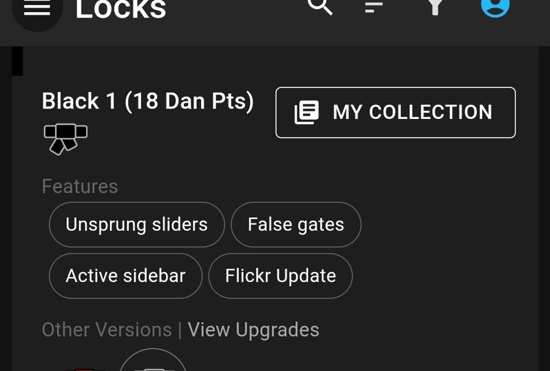
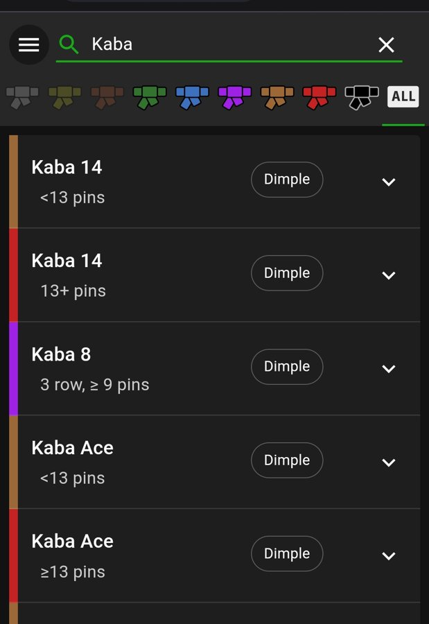
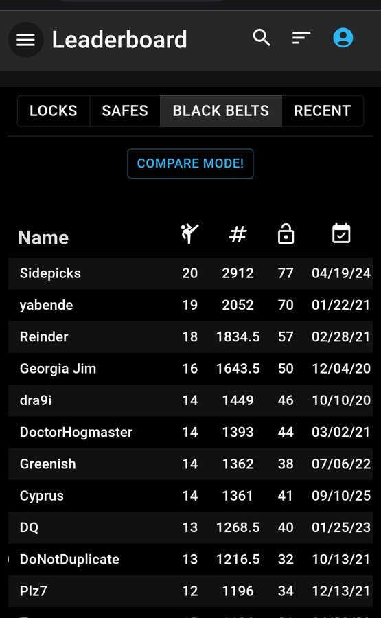
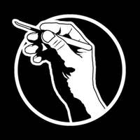

Locksport — хобито, което направи ключалките по-добри
Ключалките, които днес се продават като сигурни, дължат част от защитите си на хора, които отварят ключалки за удоволствие. Звучи като противоречие, но е точно обратното — и историята го доказва.




Екранни снимки и лого на Lock Pickers United и проекта им Belt Explorer — използвани с цел онагледяване и с посочване на източника. Марката и логото принадлежат на общността.Накратко: отварянето на ключалки като дисциплина — locksport — има организации, правила и състезания, а също и реална заслуга. Защити, които днес приемаме за даденост при всяка сериозна ключалка, съществуват, защото някой ги е намерил да липсват и го е казал на глас.
Какво е locksport
Отварянето на ключалка без ключ се възприема у нас почти изключително като нещо криминално. В останалия свят отдавна е и дисциплина — с организации, състезания и система за измерване на напредъка.
Логиката е същата като при шаха: интересна е задачата, не това до какво би могла да доведе. Механизмът е главоблъсканица, конструирана от инженер, и удоволствието идва от разбирането ѝ, не от това какво има зад вратата.
Правилата, които правят разликата
Това, което държи дисциплината настрана от сивата зона, не са добрите намерения, а правила, които са по-строги от закона:
- Само собствени ключалки или такива, за които има изрично разрешение.
- Никога ключалка, която пази нещо в момента. Механизъм в употреба не се пипа, точка.
- Знанието се споделя за учене, не за влизане.
- Нарушаването значи изключване — от състезанията и от общността.
Тези правила съществуват от деветдесетте, когато се появяват първите организации, и се спазват, защото общността сама ги налага.
Как хобито направи ключалките по-добри
Историята с ударния ключ (bump key)
Най-ясният пример. Методът с ударен ключ (bump key) е бил известен в тесни кръгове десетилетия наред, но е оставал премълчаван.
В началото на двехилядните уязвимостта започва да излиза наяве: първо през немски медии, а през 2005 г. холандската организация TOOOL публикува документ, който я описва открито. Година по-късно темата стига и до САЩ.
Реакцията на индустрията е бърза и видима. Производителите въвеждат специални щифтове срещу този вид въздействие, конструкции, които блокират механизма при опит, и системи, които работят изобщо без пружини — там методът няма за какво да се хване. А в сертификационните стандарти влизат изисквания за устойчивост, измерени в минути.
Днес всеки сериозен патрон носи тези защити. Нито една от тях нямаше да съществува, ако темата беше останала премълчана.
Защо това е по-добре от мълчанието
Старата школа в бранша залагаше на обратното: да се мълчи и да се разчита, че малцина знаят. Този подход работи, докато информацията пътува бавно.
Днес не пътува бавно. Мълчанието вече не пази никого — то само отлага момента, в който слабостта ще бъде забелязана. Неприятно е за един конкретен модел, но прави следващото поколение по-добро.
Общността и как измерва трудността
Организациите са няколко и всяка има своя роля: SSDeV в Германия от 1997 г., TOOOL в Нидерландия от 1999 г. с клонове в Европа и Северна Америка, Locksport International от 2005 г., и Lock Pickers United — най-голямата днес.
LPU живее на две места и двете са отворени: форумът в Reddit — r/lockpicking, където е създадена и самата система с коланите — и Discord сървърът с над 12 000 участници. Там се задават въпросите, там се проверяват и класациите.
Belt Explorer — класация на самите ключалки
Най-полезното, което LPU поддържа, е Belt Explorer — подредена класация на близо хиляда ключалки по това колко трудно се поддават. Всяка носи цвят на колан, от бял нагоре през жълт, оранжев, зелен, син, лилав, кафяв, червен и черен, а при най-трудните има и допълнително степенуване в точки.
Класацията не е мнение на един човек. Зад нея стоят години документирани опити от стотици хора по света, проверявани от модератори. Същата система мери и самите участници: рангът не се самообявява, а се доказва, като по-високите нива изискват и принос към общността, не само техника.
Challenge locks — ключалки, правени да не се поддават
В общността има и отделна дисциплина: challenge lock — серийна ключалка, преработена на ръка така, че да бъде възможно най-трудна за отваряне. Щифтовете се пилят и оформят поединично, камерите се нарязват с резба или се подфрезоват, а за да бъде призната, ключалката трябва да носи поне шест отделни модификации, направени от самия автор.
Тези ключалки не пазят нищо и не се продават. Правят се, за да обикалят от човек на човек в общността, да бъдат отваряни, разглобявани и изучавани — и изрично не се слагат на истинска врата. В системата на LPU изработката им е условие за напредък: от син колан нагоре трябва да си направил такава и да си я пратил на друг човек, а за най-високите нива се иска цяло портфолио.
Правили сме и ние — шест на брой, под името Pudes; четири от тях са заведени в регистъра на LPU. Това е и най-прекият начин човек да разбере как работи една ключалка: като ѝ смени вътрешностите така, че да не се предава.
Българинът DQ
На класацията на черните колани стои и българин — DQ — 13-и дан, 1265.5 точки. Това не е дребно постижение в общност с такъв обхват.
Каналите му са най-прякото място да се види как изглежда дисциплината отвътре, без митология и без драма: YouTube и TikTok (@bez.kluch).
От нашата практика: GOAL V18
Не говорим за това отстрани. GOAL V18 е японски ямков патрон, който в Belt Explorer стои на черен колан — според броя щифтове Black 1 или Black 2, тоест на нивото на EVVA 3KS и над него. Конструкцията е правена точно за да затруднява: свръхфрезоване, много на брой щифтове и торпедовидни горни щифтове.
Отворихме такъв патрон за отрицателно време — чрез самоимпресия с фолио. Ето и видеото от самото отваряне.
Какво е самоимпресия с фолио
Това не е отваряне с шперц. В ключалката влиза заготовка, обвита с тънко фолио; при работа щифтовете се отпечатват върху фолиото точно на дълбочината, на която стоят, и от получените следи излиза работещ ключ. Методът се прилага основно при ямкови и кръстати патрони — там, където класическото пипане върви бавно или изобщо не върви.
За клиента значението е просто: това е отваряне без разрушаване. Влизате си вкъщи, а патронът остава на вратата и продължава да работи със същия ключ.
И защо това не обезсмисля добрия патрон
Честно казано: да, най-горният ешелон също има методи, които го достигат. Но те изискват достъп до ключалката, специализиран инструмент и ръка, която го е правила стотици пъти. Това е работа на специалист, не на човек с отвертка.
Разликата с масовия фабричен патрон е в класа, не в степента. При него подобно отваряне не е постижение — то е няколко минути с най-евтиния комплект от интернет. Точно това измерва и класацията.
Повече от практиката ни — в канала Pudes.
Къде стои EVVA 3KS в тази класация
Тук идва частта, която има пряко значение за избора ви на патрон.
EVVA 3KS е класиран Black 1 — 18 Dan точки. Това е най-горният ешелон на скалата, при това с степенуване вътре в него. Като характеристики в класацията са изброени безпружинните плъзгачи, фалшивите прорези и активната странична лента — тоест точно конструктивните решения, които правят механизма неподатлив.
Защо това тежи повече от всяка реклама: оценката не идва от производителя и не е платена. Идва от хора, чието хоби е да намират слабости, и които нямат никакъв интерес да хвалят когото и да било. Когато такава общност постави един патрон на върха на скалата си, това е най-близкото до независимо изпитание, което потребителят може да получи.
За самия патрон и за функцията за временен достъп при него има подробен текст.
Какво значи това за вашата врата
Изводът е практичен и се свежда до едно изречение: предпочитайте конструкция, която е била гледана от много очи и е оцеляла.
Сертифицираната серия от сериозен производител е минала през изпитания, през общността и през години публично внимание. Ако в нея е имало слабост, тя най-вероятно вече е намерена и поправена. Фабричният патрон без марка и без сертификат не е „непроверен" — той е непроверяем, защото никой няма причина да го гледа.
За това какво точно липсва на такъв патрон сме писали подробно в статията за фабричните патрони на входните врати.
Какво locksport не е
За да няма недоразумения:
- Не е школа за взлом. Повечето реални взломове у нас минават през груба сила, защото е по-бързо и не изисква години практика.
- Не е повод за параноя. Никой няма да дойде пред вратата ви с инструменти и търпение.
- Не е и оправдание за нехайство. Ако една конструкция пада за секунди пред човек, който я изучава за удоволствие, тя не оказва съпротива и срещу лост — слабостта е в конструкцията, не в метода.
Точно затова следим какво се случва в тази общност. Не заради самото отваряне, а защото там най-рано се вижда кои конструкции издържат и кои само изглеждат сериозно.
Често задавани въпроси
Какво е locksport?
Отварянето на ключалки като дисциплина — разглеждано като главоблъсканица, не като начин да се влезе някъде. Практикува се върху собствени ключалки, има организации, състезания и система за измерване на напредъка. Най-близката аналогия е шахът: интересно е заради задачата, не заради това до какво води.
Законно ли е да се занимаваш с това?
Самото занимание с ключалки, които притежаваш, не е нарушение. Общността е и по-строга от закона: правилата забраняват работа по чужда ключалка и по ключалка, която пази нещо в момента. Нарушаването им води до изключване.
Не учи ли това хората как да влизат с взлом?
На практика не. Повечето реални взломове у нас минават през груба сила — счупване, издърпване, разпробиване — а не през фино отваряне, което изисква години практика и дава по-малка възвръщаемост от един лост. Това, което дисциплината наистина произвежда, е знание кои конструкции не издържат.
Как хоби може да направи ключалките по-сигурни?
Като намира слабостите и ги прави публично известни. Класическият пример е ударният ключ (bump key): след като уязвимостта беше описана публично в средата на 2000-те, производителите добавиха специални щифтове и конструктивни решения срещу нея, а в стандартите влязоха изисквания за устойчивост. Днес тези защити се приемат за даденост.
Какво е challenge lock?
Серийна ключалка, преработена на ръка така, че да бъде максимално трудна за отваряне — с ръчно оформени щифтове и модификации по механизма, като за признаване се искат поне шест отделни намеси от автора. Тези ключалки не пазят нищо, не се продават и обикалят от човек на човек в общността, за да бъдат изучавани. Изработката им е условие за напредък в системата на LPU от син колан нагоре. Правили сме шест такива под името Pudes.
Има ли българи в тази общност?
Да, и то на добро ниво. Българинът DQ стои на класацията на черните колани с 13-и дан и 1265.5 точки. Каналът му е от онези, които се гледат далеч извън България — и е добро място да се види как изглежда дисциплината отвътре, без митология.
Къде стои EVVA 3KS в класацията на LPU?
В Belt Explorer EVVA 3KS е класиран Black 1 с 18 Dan точки — най-горният ешелон на скалата. Сред изброените характеристики са безпружинните плъзгачи, фалшивите прорези и активната странична лента. Оценката идва от общността, не от производителя, и точно затова тежи.
Може ли патрон от висок клас да бъде отворен без разрушаване?
Може — от специалист, с подходяща техника и инструмент. Ние сме отваряли GOAL V18, японски ямков патрон от черен колан, чрез самоимпресия с фолио: метод, при който щифтовете се отпечатват върху фолио и от следите излиза работещ ключ. Прилага се при ямкови и кръстати патрони и оставя ключалката здрава и работеща. Това обаче изисква достъп, инструмент и опит — не е сценарий, срещу който се защитавате в ежедневието.
Какво означава това за мен като собственик?
Едно практично правило: предпочитайте серия, която е била гледана от много очи години наред и е оцеляла, пред патрон, който никой не е поглеждал. Сертифицираната серия е минала изпитание; фабричният патрон без марка и без сертификат е просто неизвестно.
Значи ли това, че ключалката ми ще бъде отворена с шперц?
Почти сигурно не. Това не е заплахата, срещу която се борите в ежедневието. Поуката е друга: ако една конструкция пада за секунди пред човек, който я изучава за удоволствие, тя не предлага съпротива и срещу груба сила — защото слабостта обикновено е в самата конструкция, не в метода.
Имате подобен случай?
Обадете се за оглед или консултация — работим в София с посещение на адрес.